西堂 picks · 1/24
深度调研 Grok Bot 自带云电脑：配置怎么样，能做什么，能当服务器用吗？
@0xlangeai · 蓝哥AI · Thu Sep 17 02:27:14 +0000 2026
用 Grok Bot (xAI's AI assistant that comes with its own computer)，除了和 AI 聊天，你还会接触到它工作的一台云端电脑。这台电脑能打开浏览器、保存文件、运行程序；即使你合上自己的笔记本，它也可以继续处理云端任务。
这听起来很像：给 AI 配了一张办公桌，再放上一台电脑。于是问题来了——这台电脑配置怎么样？我们能用它做多少事情？是不是以后连服务器都不用买了？
我让 Grok Bot 检查了它自己的电脑，并把实际结果与官方说明逐项核对。查到的配置是：8 个可见的逻辑 CPU，约 16GB 内存，一块显示为 128G 的虚拟磁盘。它还拥有较宽的软件管理权限，预装了浏览器和多种开发工具。
下面就从普通用户最关心的问题说起。截图里的命令不用逐行看，关键结果和它们意味着什么，我都写在了图旁。结果代表这台实例，不是所有账号的固定配置承诺。
1. 这台电脑在哪里？谁在使用它？
它运行在云端，由平台托管。你自己的手机和电脑主要是用来下达任务、查看进度，以及在需要时接管操作。官方说明，关闭本地应用或合上笔记本，不会因此停止正在进行的云端工作。来源：官方产品介绍（https://docs.x.ai/grok-bot/overview）。
这里有一个很容易忽略的细节：同一个账号下的多个 Bots，共用一台云电脑。你创建一个负责查资料的 Bot，再创建一个负责写代码的 Bot，它们可以分工，但不会因此多出一台电脑。
可以把它想成几个同事，共用一间办公室。每个 Bot 有自己的操作屏幕，但文件、浏览器登录状态和部分工具凭据是共享的。一个 Bot 保存的材料，另一个可以接着处理；你为一个 Bot 登录的网站，其他 Bot 也可能使用这份登录状态。
不同用户之间，官方采用独立的小型虚拟机隔离。所谓虚拟机，就是在云端服务器上划出独立的电脑环境。官方给出的技术名称是 Firecracker microVM。对用户来说，关键在于：账号之间有隔离，同账号的 Bots 则共享工作环境。来源：官方安全 FAQ（https://docs.x.ai/grok-bot/security-faq）。
2. 配置到底怎么样？先看三个数字
• CPU：8 个可见逻辑 CPU。程序可以在多个计算单元上调度；实际速度还要看任务和资源分配。
• 内存：系统显示约 15GiB。供浏览器、程序和后台组件共同使用，不是每个 Bot 各有一份。
• 磁盘：磁盘显示 128G；文件系统约 126G，检查时可用约 93G。可以保存文件和项目；可用空间会随着使用变化。
这里的 GiB 是电脑统计容量的一种单位，与日常产品宣传里的 GB 略有区别。阅读时可以先把它理解为大约 16GB 这个量级的内存，不必纠结单位换算。
CPU 数量背后，还要查有没有额外限制。有时电脑虽然显示多个 CPU，某个程序实际只被允许使用一小部分。所以检查没有停在“8”这个数字上，还继续查看了程序允许使用的范围与资源限制。
结果是，当前程序可以在全部 8 个可见 CPU 上运行。程序所在这一层没有额外的 CPU 时间上限，但更上层能看到相当于 8 个 CPU 的时间预算。它们是共享资源，不能理解为每个 Bot 都独占八核，更不能理解为八个物理核心随时只为你服务。
截图里的 cgroup，是 Linux 管理资源分配的机制，作用类似给不同任务规定“最多能用多少资源”。当前层显示不额外限额，仍然可能受到上层总额度 (quota (how much use your plan allows))约束。这也是为什么只看一行配置，容易得出过大的结论。来源：Linux 官方资源管理文档（https://docs.kernel.org/admin-guide/cgroup-v2.html）。
操作系统是 Debian 13，一种常用于服务器的 Linux 系统。截图同时记录了系统版本与 CPU 信息；这些结果没有告诉我们具体使用哪家云厂商，也没有直接给出性能排名。
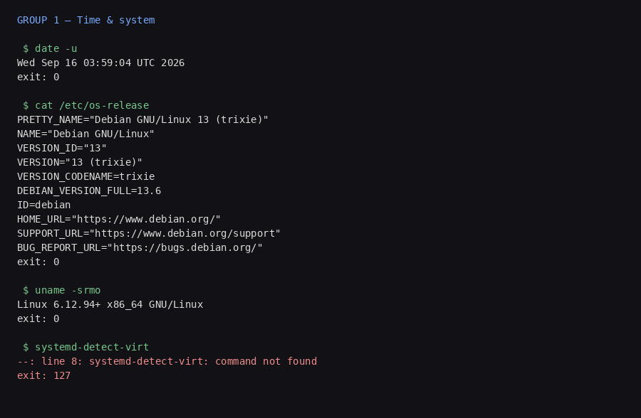
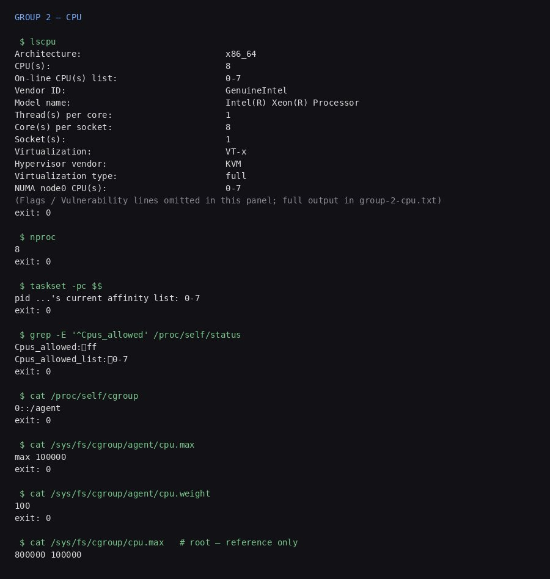
内存也需要大家一起分。浏览器、后台程序和你交给 Bot 的任务都要占用内存。系统显示约 15GiB，总资源限制中还能看到 16GiB 的数值，但这不意味着某个任务可以把它全部用满。
检查还发现，没有显示已配置的交换空间——可以把它理解为内存吃紧时，系统借用硬盘周转的一种方式。这里没有测试内存耗尽时会怎样，因此不把“程序开多少都没问题”当成结论。
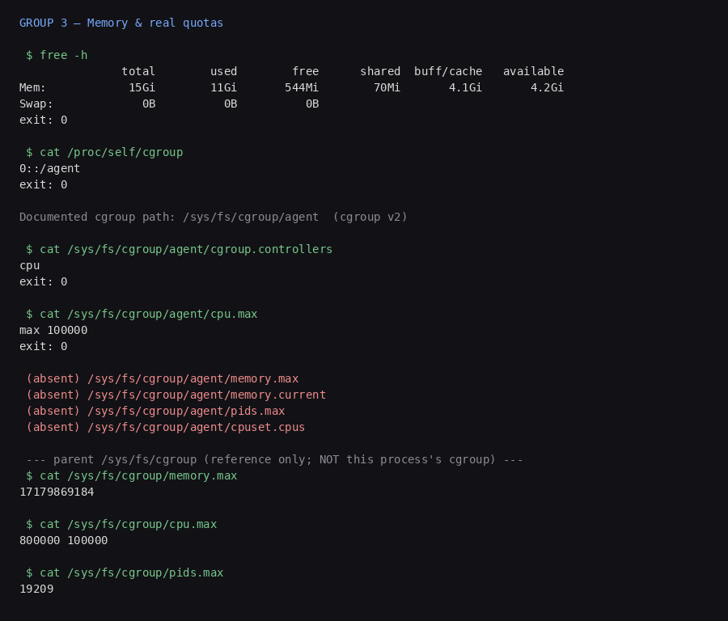
这些数字说明它有可供实际工作的计算资源。不过，我们没有运行性能测试，暂时不能把它的速度等同于某款笔记本或某个价位的云服务器。
3. 文件能存下来吗？有空间和长期保留是两回事
磁盘检查中有个重要发现：系统目录、工作目录 /workspace 和临时目录 /tmp，看到的是同一份文件系统容量。它们就像同一块硬盘里的不同文件夹，不能把三处显示的空间加起来。
因此，可用空间约 93G，并不是“工作目录有 93G，临时目录又有 93G”。往其中一个位置放入大文件，就可能影响其他位置可用的空间。
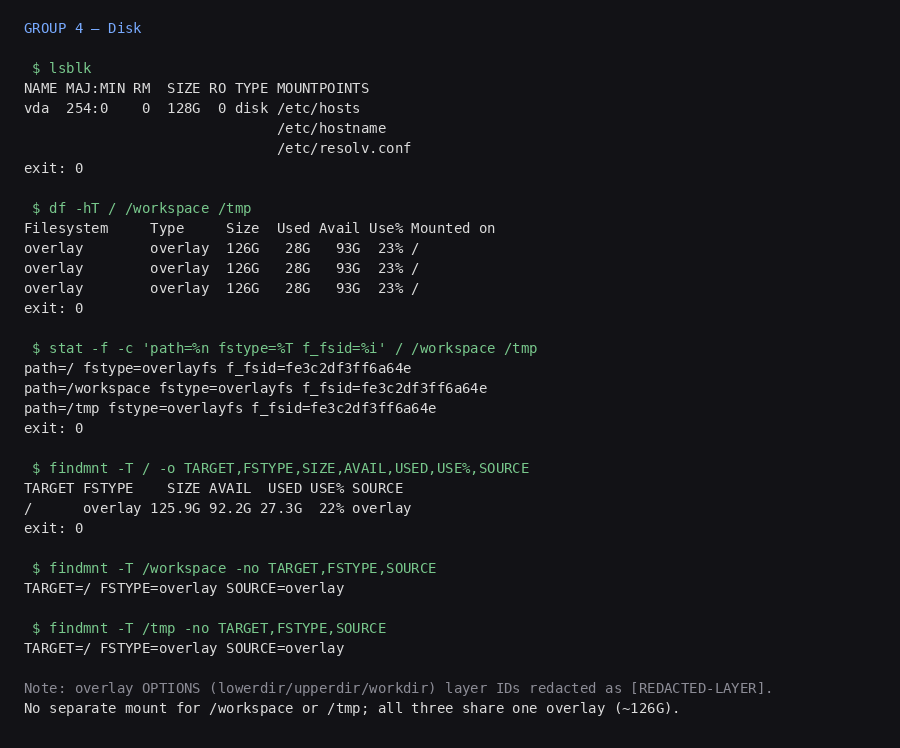
截图里的 overlay，可以理解为系统把不同文件层合并成你看到的一套目录。单凭这个名字，看不出平台在电脑休眠、更新或重建后会保存哪些东西。
官方建议把长期项目文件放在 /workspace，并说明文件、浏览器状态和支持的登录信息会尽量在正常更新和恢复中保留。临时目录、自己安装的软件和没有保存的程序状态，则需要按可能被替换来准备。来源：官方文件与电脑使用说明（https://docs.x.ai/grok-bot/computer-and-apps）。
对使用者最实用的做法是：把正式结果存进工作目录，重要材料再保留一份自己的副本。至于关机、休眠或重建后具体保留了什么，需要前后对照测试；一张磁盘截图不能回答这个问题。
4. 能自己装软件吗？它给了多大的权限？
这台电脑里的普通用户名叫 box。检查发现，它配置了免密码使用 sudo 的权限。sudo 是 Linux 里的管理工具，可以让普通用户临时以管理员身份执行命令。
用熟悉的说法理解，就是这台电脑为你留出了较大的管理空间。安装依赖、配置开发工具等事情，有了权限上的基础。官方面向企业的初始化文档也说明，可以使用 sudo 安装工具。来源：官方环境初始化说明（https://docs.x.ai/grok-bot/private-networks）。
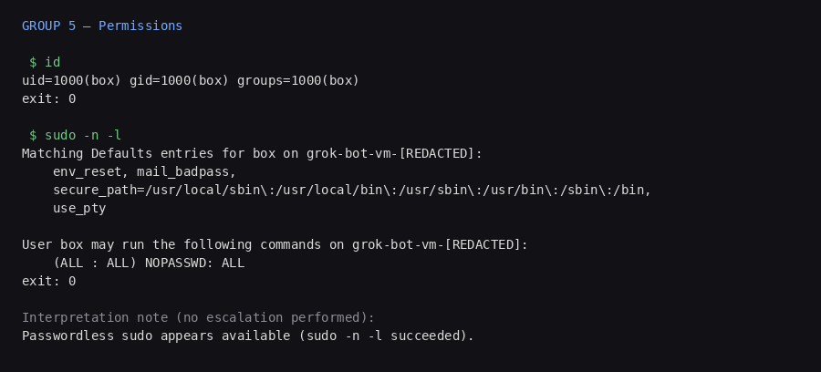
但这项权限只针对当前环境。就像你可以管理租用的办公室，并不意味着可以进入整栋楼其他租户的房间。免密码管理权限不能推导出对平台服务器或其他用户的控制权。
而且，检查只是读取了权限设置，没有实际进行管理员修改。有些操作仍然可能受到设备、系统能力或平台审批机制的限制。
下面是系统与权限检查的终端现场画面。涉及账号标识的主机名数字，以及挂载层标识，已经脱敏。
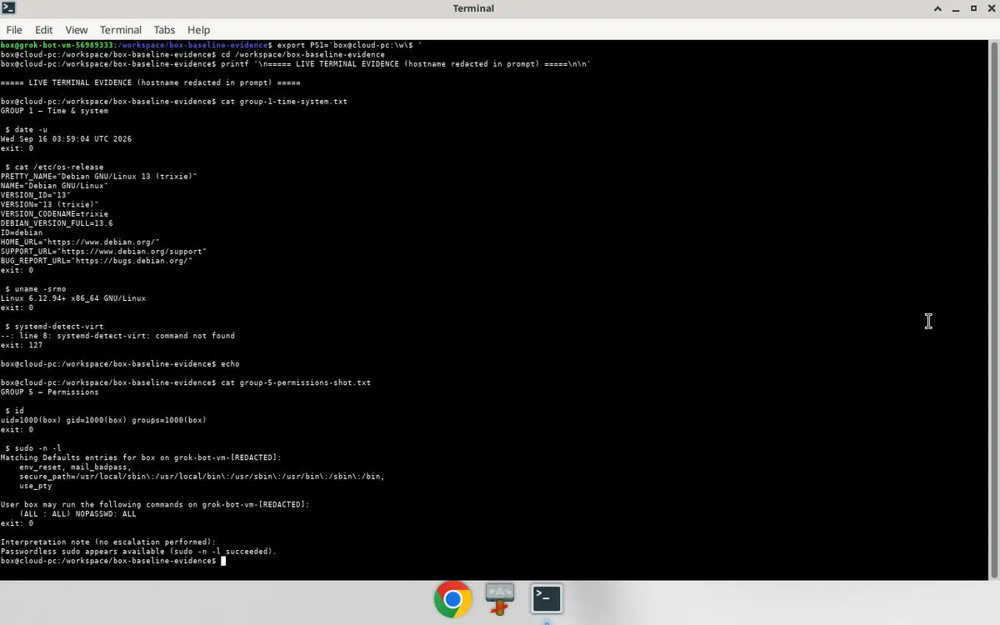
5. 打开以后，已经有哪些工具可以用？
它并非一个空白环境。检查中已经找到 Chrome 浏览器，以及 Python、Node.js、Git 等工具。不写代码的读者可以这样理解：浏览器负责操作网站，Python 和 Node.js 常用于运行自动化程序，Git 则用于管理代码和版本。
这些是让 AI 真正操作软件、处理文件的基础。它们为整理数据、执行脚本和处理代码项目提供了条件。不过，“工具已经安装”与“某个具体任务一定能完成”，仍然需要分开看。
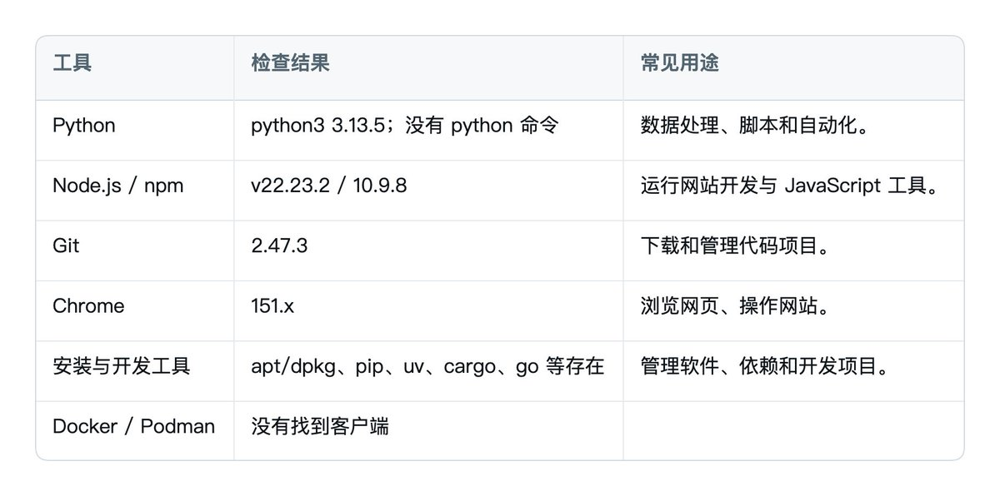
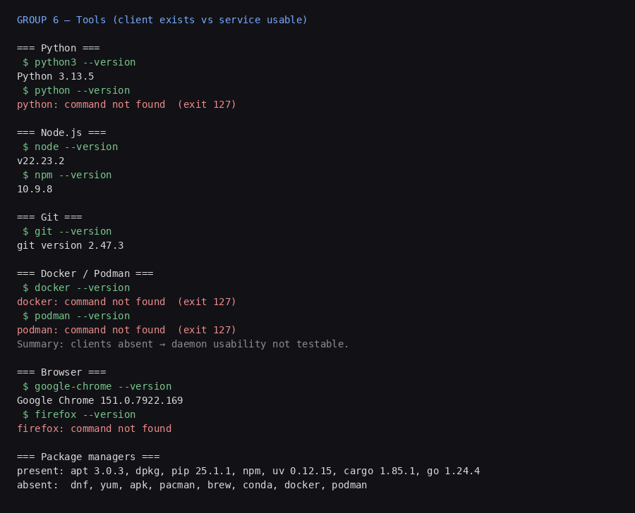
最后还检查了显卡。没有找到常用的 NVIDIA 检查工具，也没有发现可访问的常见显卡设备接口。这只能说明此次检查没有找到可用显卡入口，不能反过来证明底层机器一定没有显卡。
这里还要区分两件事：Bot 使用的这台电脑负责执行工作，而回答问题的 AI 模型可以由其他计算服务提供。不能拿这台电脑的显卡检查结果，推断整个 Grok 系统的算力。
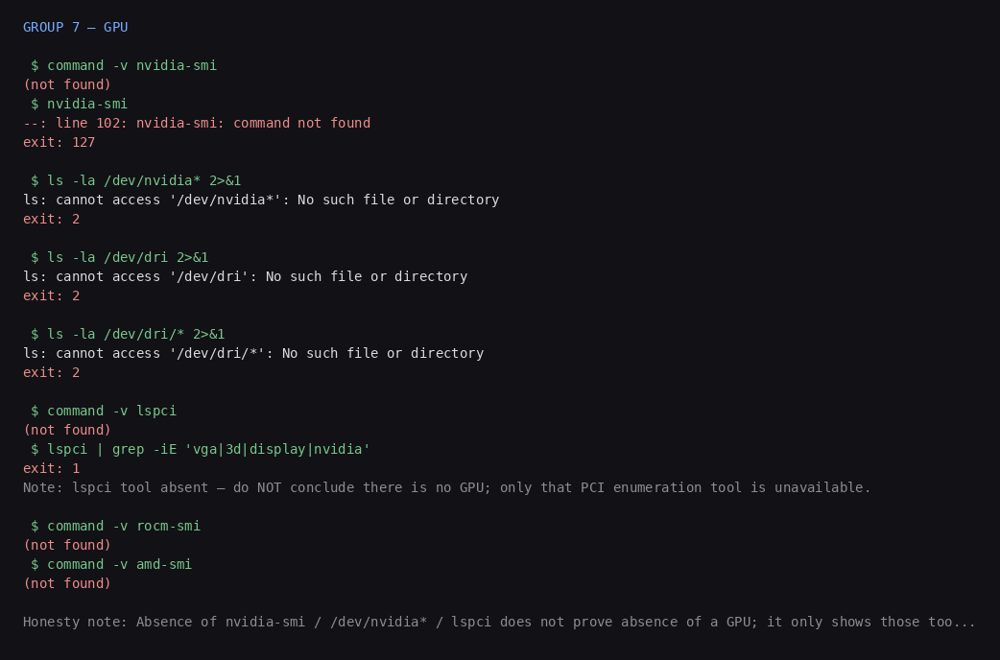
6. 外部能访问这台电脑吗？
看到配置、磁盘和管理权限后，很容易想到：能不能把网站、小工具或者 API (a way for programs to talk to each other) 放在上面，再从自己的手机或电脑打开？
Grok Bot 云电脑尚未确认支持公网 IP 直连，但可以通过隧道让外部访问其中运行的服务。 具体实例仍要满足网络连接、隧道程序和应用都正常运行等条件。
这里要分清两种访问方式。公网直连，是外部电脑直接通过服务器的公网 IP 和端口连接它。隧道访问，则是云电脑先主动连接一个中转服务，再由中转服务把外部请求送进来。没有公网直连入口，不代表没有第二种路径。
官方说明，Grok Bot 默认使用共享的固定出口 IP。出口地址就像打电话时对方看到的来电号码，只说明这台电脑向外访问时使用什么地址，并不证明别人能通过这个地址连接回来。目前没有找到官方提供用户公网入站地址或端口映射的说明，也没有这台实例公网直连成功的测试记录。因此，应当说“尚未确认支持”，不能直接断言“不支持”。来源：官方安全 FAQ
还有一个容易混淆的细节：Grok Bot 官方文档里的 Tailscale 和 Cloudflare 示例，主要是在教你让 Bot 访问公司内网。我们关心的是反过来，让外部访问 Bot。工具相同，连接方向与配置却不同。官方列出了网络客户端的配置方式，不等于已经验证了 Bot 对外发布网站。来源：官方网络文档
Tailscale：自己访问，还是公开分享？
Tailscale 可以把不同地点的设备连接到一个私人网络。你的电脑与 Grok Bot 加入同一个网络后，在访问规则允许的范围内就可以通信。但加入这个网络，不代表网站已经向所有人开放。
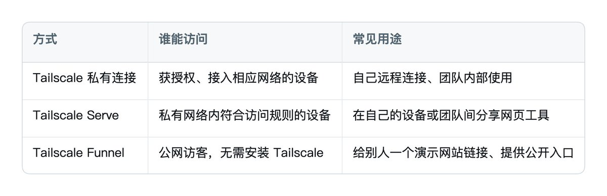
例如，Bot 里有个程序在 localhost:3000 提供网页。localhost 的意思是“这台电脑自己”，所以这个地址不能直接发给别人。Serve 可以把它转发到私人网络地址；Funnel 则能提供公网 HTTPS 地址。来源：Serve 官方说明、Funnel 官方说明
Funnel 使用 Tailscale 的域名，入口端口限定为 443、8443、10000，并有不可自行调整的带宽限制。它提供了公开分享路径，但不能未经测试就按普通公网服务器来估算承载能力。来源：Funnel 限制
实际速度还取决于连接路径。Tailscale 可能让两台设备直接通信，也可能通过中继服务器转发。中继通常会增加延迟或降低吞吐。测速时应同时记录 tailscale status 或 tailscale ping 中的 direct、relay 或 peer-relay，避免把中继速度当成 Bot 服务器本身的带宽。来源：Tailscale 连接类型
Cloudflare Tunnel：通过网址把请求转交进来
Cloudflare Tunnel 的工作方式更接近一个接待处：访客打开网址，Cloudflare 收到请求，再通过已经建立的连接转交给 Bot 中的程序。
MARKDOWN block
连接由 Bot 主动向 Cloudflare 建立，因此不需要给源服务器开放公网入站端口。这就是为什么“没有独立公网 IP”也可能向外提供服务。来源：Cloudflare Tunnel 官方说明
隧道程序需要运行在 Bot 内，或其他能够访问该服务的机器上。仅仅在自己的笔记本上安装 cloudflared，不会自动把 Bot 的网站发布出去。
Cloudflare 的临时链接与固定域名也要区分：
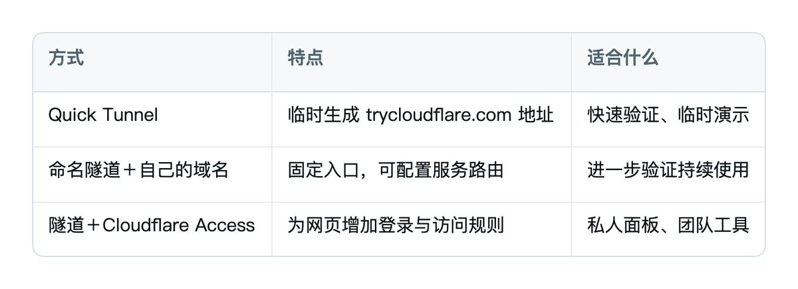
Quick Tunnel 官方明确没有在线率保证，最多允许 200 个同时处理中请求，而且不支持 SSE。SSE 是很多 AI 应用实现“文字逐步出现”的一种通信方式。这意味着，静态页面能打开，不代表聊天页面的逐字输出也能正常工作。来源：Quick Tunnel 官方限制
固定域名解决的是地址问题，并不能保证后面的电脑一直在线。需要限制访问者时，应单独配置 Cloudflare Access；使用了隧道，不代表自动加上了登录保护。来源：Cloudflare Access 官方说明
页面能打开，流式输出和远程登录还要分别检查
连接排查中有两个不同层面：隧道怎样连接 Cloudflare，以及应用怎样把内容传给浏览器。
如果 UDP 通信受限，cloudflared 可以回退或配置为 HTTP/2，通过 TCP 7844 建立隧道。它并不是改走普通的 443 端口；如果 TCP 和 UDP 的 7844 都被阻断，切换协议也不能解决。来源：Cloudflare 连接排查
但 HTTP/2 是隧道这一层的选项，SSE 是应用输出内容的一种方式。切换 HTTP/2，不会消除 Quick Tunnel 不支持 SSE 的限制。因此，遇到“页面能打开，AI 却不逐字输出”，应先区分是哪一层的问题。普通请求、SSE 和 WebSocket 这类实时连接，应当分别测试。
远程命令行也是独立的能力。SSH 用于在另一台电脑上执行命令，需要网络路径、SSH 服务和身份验证同时配置正确。Tailscale 设备上线，不等于 SSH 已启动；Cloudflare 的普通公网主机名路由方案中，SSH、TCP 等非网页服务通常还需要访问端运行 cloudflared。一个网页链接成功，不能代表远程登录也已经可用。来源：Cloudflare 路由说明
7. 能不能把它当成一台长期服务器？
看到配置、磁盘和管理权限后，很容易想到：那我能不能把网站、小工具或者后台服务直接放在上面？
能运行程序，只是这个问题的一部分。一台长期对外提供服务的服务器，还需要持续运行，并且让外部用户稳定访问。这两点不能仅靠配置表确认。
先看持续运行。官方说明，关闭自己的电脑不会终止云端工作；同时，空闲云电脑也会自动休眠。所以，“我合上笔记本，Bot 继续做任务”与“我放进去的任何程序都能全年不停运行”，不能画等号。来源：官方休眠与托管说明（https://docs.x.ai/grok-bot/security）。
再看外部访问。官方说它默认使用共享的固定出口 IP。出口 IP 就像你打电话时，对方看到的来电号码：它说明这台电脑访问外网时用什么地址。它不自动意味着外部的人可以通过这个地址连接你放在里面的网站。
官方提供了通过用户桌面网络访问服务的方式，企业团队还可以安装网络工具连接内部系统。但这些功能，也不等于已经为每位用户提供了独立的公网服务器地址。来源：官方网络说明（https://docs.x.ai/grok-bot/private-networks）。
当前结论是：通过隧道向外提供服务有明确的技术路径；它能否承担长期网站或后台服务，仍需根据实际连接与恢复结果判断。
8. 它最值得关注的价值在哪里？
对普通用户而言，最有价值的变化是：交给 AI 的任务可以在一个有浏览器、有文件、有程序的环境里执行，并保留继续工作的条件。
比如一项工作需要查资料、整理文件、运行处理程序，再把结果交出来，这些步骤就有机会在同一个环境里衔接。多个 Bots 也可以利用共享文件交接工作，不必由用户每一步都手动搬运。具体任务能否完成，仍取决于工具、网站权限和执行效果。
这台实例的配置和权限，让这种工作方式有了看得见的基础。但使用时也要记住几个直接影响体验的事实：多个 Bots 共享资源，文件夹里的容量不能重复计算，软件安装权限不保证所有操作都能执行，文件保留与程序不停运行更是不同问题。
我的判断是，评估 Grok Bot 时，值得关注它能替你完成多少实际工作、下次能否接着做，以及遇到问题时能否恢复。CPU 和内存决定了部分能力，能稳定交付结果，才决定这台云电脑对你有没有用。
Source: https://x.com/0xlangeai/status/2100411223410110578
← Previous 用Grok Bot搭建自媒体团队：保姆级教程 →